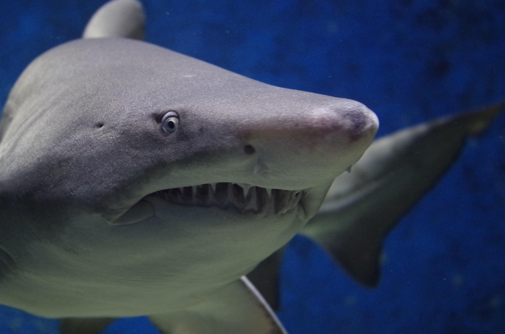

Vertebrados

¿Qué son los peces?
Los peces (del latín pisces) son animales vertebrados primariamente acuáticos, generalmente ectotérmicos (regulan su temperatura a partir del medio ambiente) y con respiración por branquias. Suelen estar recubiertos por escamas, y están dotados de aletas, que permiten su movimiento continuo en los medios acuáticos, y branquias, con las que captan el oxígeno disuelto en el agua. El grupo Pisces no es un taxón porque sería parafilético. Los peces son abundantes tanto en agua salada como en agua dulce, pudiéndose encontrar especies desde los arroyos de montaña (por ejemplo, el gobio), así como en lo más profundo del océano (por ejemplo, anguilas tragonas).
Caracteristicas:
- Cuerpo cubierto de escamas (aunque algunas especies no tienen escamas).
- Respiran por branquias, que les permiten extraer oxígeno del agua.
- Son acuáticos y viven en ambientes de agua dulce o salada.
- Tienen aletas que les ayudan a nadar y mantener el equilibrio.
- Son vertebrados de sangre fría (ectotermos), lo que significa que su temperatura corporal depende del ambiente.
- Se reproducen mayormente por huevos (ovíparos), aunque hay excepciones vivíparas u ovovivíparas.
- Poseen una línea lateral, un órgano sensorial que detecta vibraciones y cambios en el agua.
¿Cómo se reproducen los peces?
Los peces se reproducen sexualmente. Ponen huevos que se pueden fertilizar ya sea dentro o fuera del cuerpo. En la mayoría de los peces, los huevos se desarrollan en el exterior del cuerpo materno. En la mayoría de estas especies, la fertilización también ocurre fuera del cuerpo de la madre. El pez macho y el pez hembra liberan sus gametos al agua que los rodea, donde tiene lugar la fertilización. El pez hembra libera altos números de óvulos para aumentar las posibilidades de fertilización.
Excepciones de las caracteristicas mas comunes de los peces:
Sangre caliente:
El atún, el pez espada y algunas especies de tiburón muestran adaptaciones de sangre caliente y son capaces de elevar su temperatura corporal de manera significativa sobre la del agua que los rodea.Aletas:
Algunas especies de peces tienen un estilo de nado más maniobrable, como las anguilas y rayas. La forma corporal y la disposición de las aletas son altamente variables y la superficie de la piel puede ser desnuda, como en muchas anguilas, o cubierta de aletas. Las aletas pueden ser de diferentes tipos.
Los pulmonados:
Los dipnoos, también conocidos como peces pulmonados, son una subclase de peces sarcopterigios, es decir, que presentan aletas lobuladas. Son los peces más cercanos a los tetrápodos entre los taxones existentes, según los análisis moleculares y morfológicos.
Clasificación
El grupo de los peces es parafilético y se define como todos los vertebrados que no son tetrápodos, es decir, por la exclusión de un taxón (los tetrápodos) de otro mayor (los vertebrados), y no por la posesión de características derivadas comunes (apomorfías). Las especies hoy existentes pertenecen a tres grupos (a veces considerados clases, a veces superclases)
Agnatos
Agnatos o peces sin mandíbulas, que incluye unas pocas especies actuales (lampreas y mixines). Es un grupo parafilético.Mientras que unos pocos científicos siguen considerando que los agnatos vivos son sólo superficialmente similares, y argumentan que muchas de estas similitudes son probablemente compartidas basal características de los vertebrados antiguos, los estudios taxonómicos más recientes sitúan claramente a los mixinos (los Myxini o Hyperotreti) con las lampreas (Hyperoartia) como más estrechamente relacionados entre sí que con los peces con mandíbulas
Los agnatos fósiles más antiguos aparecieron en el Cámbrico, y en la actualidad sobreviven dos grupos: las lampreas y los mixinos, que comprenden unas 120 especies en total. Los mixinos se consideran miembros del subfilo Vertebrata, porque perdieron secundariamente las vértebras; antes de que este hecho se dedujera a partir de datos moleculares y de desarrollo datos, el grupo Craniata fue creado por Lankester (y todavía se utiliza a veces como un descriptor estrictamente morfológico) para referirse a los mixinos más vertebrados.
Condrictios
Condrictios o peces cartilaginosos, que incluyen a tiburones, rayas y quimeras, caracterizados por poseer hendiduras branquiales externamente visibles y un esqueleto compuesto sólo de cartílago. Son un grupo de vertebrados muy basales, pero muy exitosos evolutivamente, ya que los tiburones son animales antiquísimos que no han cambiado mucho desde su origen.
A diferencia de los peces óseos, que poseen un esqueleto rígido de calcio, el cartílago ofrece ventajas en términos de ligereza y flexibilidad, lo que facilita una mayor agilidad en el agua. Esta estructura cartilaginosa ha sido una característica evolutiva clave que les ha permitido prosperar en una variedad de hábitats marinos.
Osteictios
Osteictios o peces óseos, con esqueleto óseo y branquias protegidas mediante un opérculo. A su vez se subdividen en:
Los osteíctios (Osteichthyes, del griego ὀστεον /ósteon/, "hueso", , "pez") o conocidos vulgarmente como peces óseos son vertebrados gnatóstomos que incluye a todos los peces dotados de esqueleto interno óseo, es decir, hecho principalmente de piezas calcificadas y muy pocas de cartílago. Junto con los condrictios (peces cartilaginosos), forman los dos grandes grupos que comprenden los animales llamados vulgarmente «peces»; aún existe un tercer grupo, el de los peces sin mandíbulas (lampreas y mixines), con muy pocos representantes actuales. Hoy en día se sabe que este grupo está formado por las clases Actinopterygii y Sarcopterygii (esta última incluyendo los tetrápodos).
- Actinopterigios, peces óseos con aletas provistas de radios.
- Sarcopterigios, peces óseos con aletas lobuladas. Son un grupo parafilético de los tetrápodos (vertebrados provistos de cuatro patas); los primeros anfibios se originaron a partir de sarcopterigios primitivos.
.jpg)
Anatomía
Sistema respiratorio
Los peces realizan la mayor parte del intercambio gaseoso mediante el uso de las branquias, que se encuentran hacia ambos lados de la faringe. Las branquias están constituidas por estructuras filiformes denominadas filamentos branquiales. Cada uno de estos filamentos contienen capilares, que permiten una gran superficie para el intercambio de oxígeno y dióxido de carbono. Este intercambio se produce cuando el pez aspira agua, que pasa a través de las branquias.
Sistema digestivo
Si bien todas las especies de peces poseen boca, no todas han desarrollado mandíbulas (ejemplo de esto son los agnatos). En el caso de las especies que si desarrollaron mandíbulas, esto les permitió acceder a una variedad mucho más amplia de alimentos, incluyendo las plantas y otros organismos.
En los peces, al ser la comida ingerida a través de la boca, es desglosada a través del tubo digestivo.El tubo digestivo está dividido en cavidad oral, faringe, esófago, estómago e intestino (esto puede variar según las especie y los hábitos alimenticios).[6] Órganos como el hígado y el páncreas añaden enzimas digestivas. La absorción de nutrientes se realiza a través del intestino.
Sistema locomotor
Con el fin de desplazarse de la mejor manera en el medio acuático (principalmente), los peces han desarrollado una serie de aletas, con diferentes funciones, algunas de ellas son:
- Aletas dorsales: Ubicadas en la zona dorsal, su función principal es entregar estabilidad y maniobrabilidad.
- Aleta caudal: Ubicada en la cola, su función es impulsar el nado.
- Aletas anales: Ubicadas ventrales al ano, su función es estabilizadora.
- Aletas pectorales: Ubicadas detrás de las branquias, su función principal es estabilizar, aun cuando existen interesantes modificaciones de estas aletas (como en el caso del pez volador).
- Aletas pélvicas o ventrales: Ventrales a las aletas pectorales.
.svg.png)
Capacidad para sentir dolor
Experimentos realizados por el Dr. Lionel Wright, zoólogo del Mote Marine Laboratory, aportan pruebas de que los peces muestran respuestas de miedo y dolor. Por ejemplo, en los experimentos de Tavolga, los peces sapo gruñían cuando se le aplicaban descargas eléctricas, y con el tiempo comprobaron que ya gruñían ante la mera vista de un electrodo.
En 2003, científicos escoceses de la Universidad de Edimburgo que realizaban una investigación sobre la trucha arcoíris concluyeron que los peces muestran comportamientos asociados generalmente con el dolor. En pruebas realizadas tanto en la Universidad de Edimburgo como en el Instituto Roslin, se inyectó veneno de abeja y ácido acético en los labios de la trucha arcoíris, lo que hizo que los peces balancearan sus cuerpos y frotaran los labios contra las paredes y el suelo de sus tanques, por lo que los investigadores creen que eran esfuerzos por aliviar el dolor, de forma similar a como lo harían los mamíferos. Las neuronas en los cerebros de los peces mostraron un modelo parecido al de los humanos cuando experimentan dolor.
El profesor James D. Rose de la Universidad de Wyoming criticó el estudio, afirmando que era erróneo, principalmente porque este no aportaba pruebas de que los peces poseen «percepción consciente, en particular un tipo de percepción que se parezca de forma significativa a la nuestra». Rose sostiene que ya que el cerebro de los peces es muy diferente del nuestro, los peces probablemente no son conscientes (en la forma en que los son las personas), por lo que las reacciones similares a las reacciones humanas al dolor tienen otras causas. Rose había publicado su propia opinión un año antes sosteniendo que los peces no pueden sentir dolor dado que sus cerebros carecen de neocórtex. Sin embargo, la conductista animal Temple Grandin sostiene que los peces podrían tener consciencia aún sin neocórtex, porque especies distintas pueden usar sistemas y estructuras cerebrales diferentes para tratar las mismas funciones.
Los defensores de los derechos de los animales han mostrado su inquietud sobre el posible sufrimiento de los peces a causa de la pesca con caña. A la vista de recientes investigaciones, algunos países como Alemania han prohibido determinados tipos de pesca, y la Royal Society for the Prevention of Cruelty to Animals (RSPCA) británica, que considera que los peces es poco probable que perciban el dolor del mismo modo que las personas, pero que hay evidencias actualmente que indican que los peces realmente tienen la capacidad de percibir dolor y sufrimiento, por lo que persigue judicialmente a los individuos que son crueles con los peces.